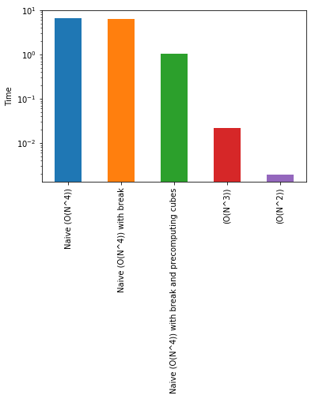

def f1(n):
out = []
for a in range(1, n+1):
for b in range(1, n+1):
for c in range(1, n+1):
for d in range(1, n+1):
if a**3 + b**3 == c**3 + d**3:
out.append((a, b, c, d))
return out Placement-Preparation-2018-1-HashMap
In this blogpost, we will take a question from Cracking the Coding Interview. I discussed this question with Masters students at IITGN. We came up with some great answers. I’ll show how we increasingly went towards better solutions starting from naive ones.
Problem statement
Find all integer solutions to the problem \(a^3 + b^3 = c^3 + d^3\)
where \(1<=a<=n, 1<=b<=n, 1<=c<=n, 1<=d<=n\)
First attempt : Naive bruteforce \(O(n^4)\)
Let’s write a very simple first attempt. We will write four nested loops. This will be \(O(n^4)\) solution.
f1_time = %timeit -o f1(50)6.65 s ± 203 ms per loop (mean ± std. dev. of 7 runs, 1 loop each)f1_time.average6.646897936570895Second attempt : Reduce computations in brute force method
Let’s now try to optimise f1. We will still use a solution of \(O(n^4)\) solution. However, we add one small optimisation fo f1. We break from the innermost loop once we find a match. This will hopefull save us some computations.
def f2(n):
out = []
for a in range(1, n+1):
for b in range(1, n+1):
for c in range(1, n+1):
for d in range(1, n+1):
if a**3 + b**3 == c**3 + d**3:
out.append((a, b, c, d))
break
return out f2_time = %timeit -o f2(50)6.29 s ± 26.3 ms per loop (mean ± std. dev. of 7 runs, 1 loop each)Ok. We’re little better than f1. Every reduced computation is time saved!
Third attempt : Reduce repeated computations by saving cubes of numbers
One of the student came up with an excellent observation. Why should we keep on computing cubes of numbers? This is a repeated operation. Let’s instead store them in a dictionary.
def f3(n):
cubes = {}
for x in range(1, n+1):
cubes[x] = x**3
out = []
for a in range(1, n+1):
for b in range(1, n+1):
for c in range(1, n+1):
for d in range(1, n+1):
if cubes[a] + cubes[b] == cubes[c] + cubes[d]:
out.append((a, b, c, d))
break
return out f3_time = %timeit -o f3(50)1.05 s ± 4.11 ms per loop (mean ± std. dev. of 7 runs, 1 loop each)Ok. We now mean business! This is about 6 times quicker than our previous version.
Fourth attempt : Reduce one loop \(O(n^3)\)
In this solution, we will reduce one loop. We can solve for \(d^3 = a^3 + b^3 - c^3\) and find all the integer solutions. Now, there’s another clever optimisation that I have added. We can precompute the cubes and the cuberoots corresponding to numbers from 1 to N and perfect cubes from 1 to \(N^3\) respectively.
def f4(n):
cubes = {}
cuberoots = {}
for x in range(1, n+1):
x3 = x**3
cubes[x] = x3
cuberoots[x3] = x
out = []
for a in range(1, n+1):
for b in range(1, n+1):
for c in range(1, n+1):
d3 = (cubes[a] + cubes[b] - cubes[c])
if d3 in cuberoots:
out.append((a, b, c, cuberoots[d3]))
return out f4_time = %timeit -o f4(50)21.7 ms ± 1.99 ms per loop (mean ± std. dev. of 7 runs, 10 loops each)This is seriously fast now!
Fifth attempt : Reduce another loop \(O(n^2)\)
In this solution, we will reduce one more loop. We can compute \(a^3 + b^3\) for all a, b. And then find c and d where \(c^3 + d^3\) is the same as \(a^3 + b^3\). This has a few Python tricks inside! One of the special cases to handle is of the type \(1^3 + 2^3 = 2^3 + 1^3\)
def f5(n):
out = []
cubes = {}
for x in range(1, n+1):
cubes[x] = x**3
sum_a3_b3 = {}
for a in range(1, n+1):
for b in range(1, n+1):
temp = cubes[a]+cubes[b]
if temp in sum_a3_b3:
sum_a3_b3[temp].append((a, b))
else:
sum_a3_b3[temp] = [(a, b)]
for c in range(1, n+1):
for d in range(1, n+1):
sum_c3_d3 = cubes[c] + cubes[d]
if sum_c3_d3 in sum_a3_b3:
for (a, b) in sum_a3_b3[sum_c3_d3]:
out.append((a, b, c, d))
return outf5_time = %timeit -o f5(50)1.97 ms ± 235 µs per loop (mean ± std. dev. of 7 runs, 100 loops each)Plain Wow! Going from 6 seconds to about 2 ms! Let’s plot the timings on a log scale to learn more.
%matplotlib inline
import matplotlib.pyplot as plt
import pandas as pds = pd.Series({'Naive (O(N^4))':f1_time.average,
'Naive (O(N^4)) with break':f2_time.average,
'Naive (O(N^4)) with break and precomputing cubes':f3_time.average,
'(O(N^3))':f4_time.average,
'(O(N^2))':f5_time.average})s.plot(kind='bar', logy=True)
plt.ylabel("Time");
Hope this was fun!